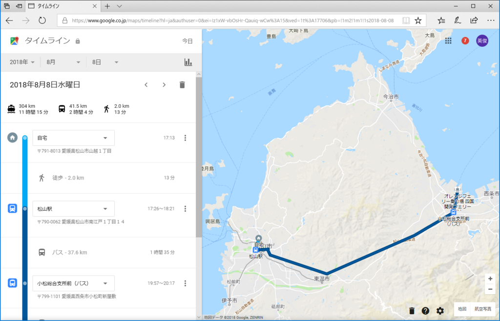
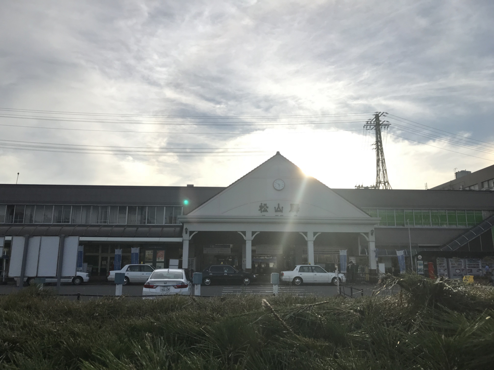
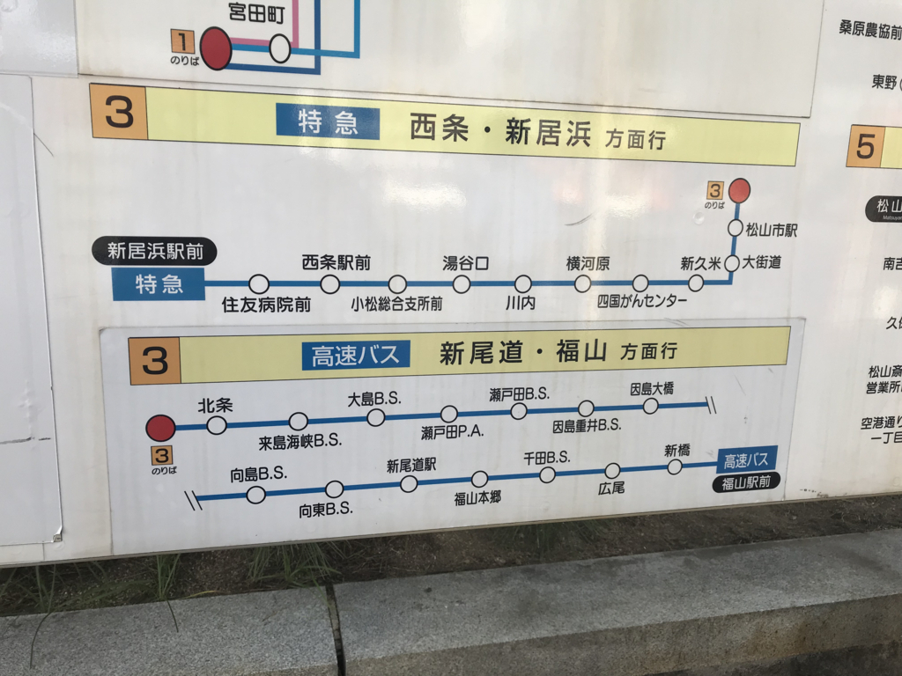
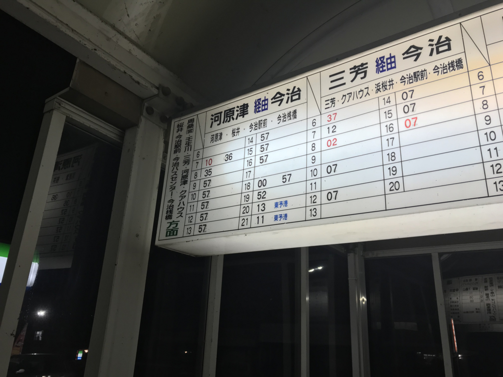
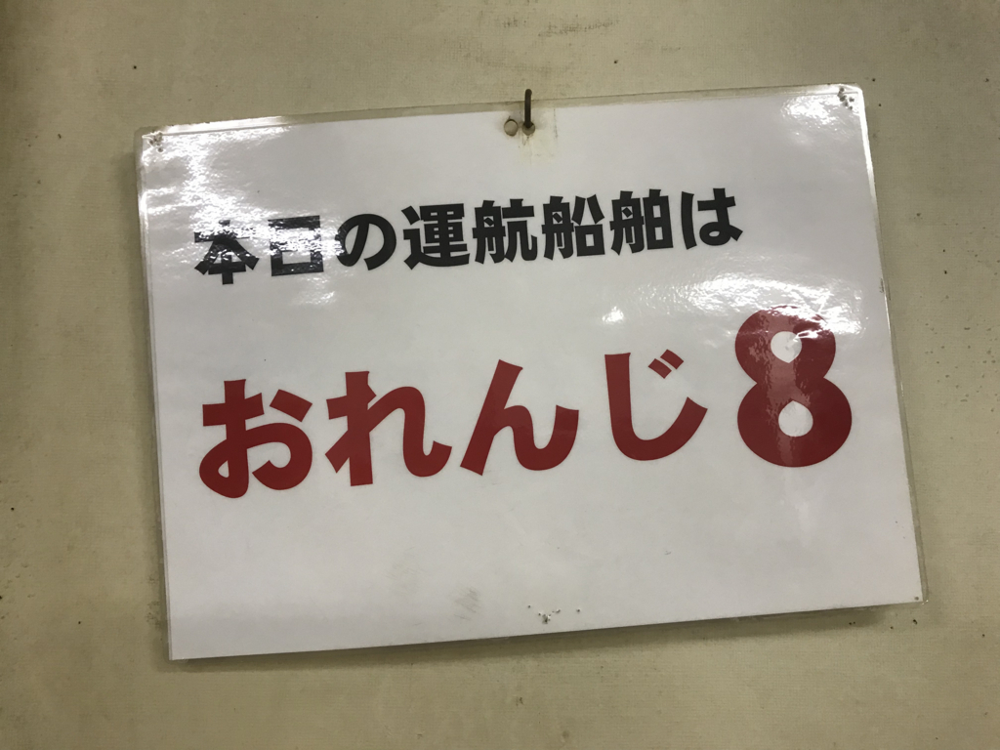
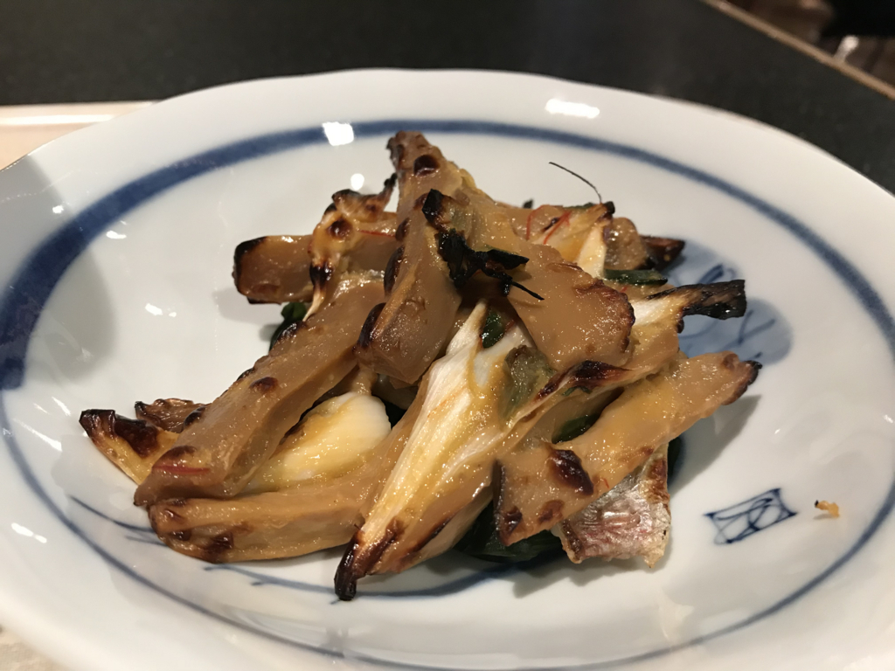
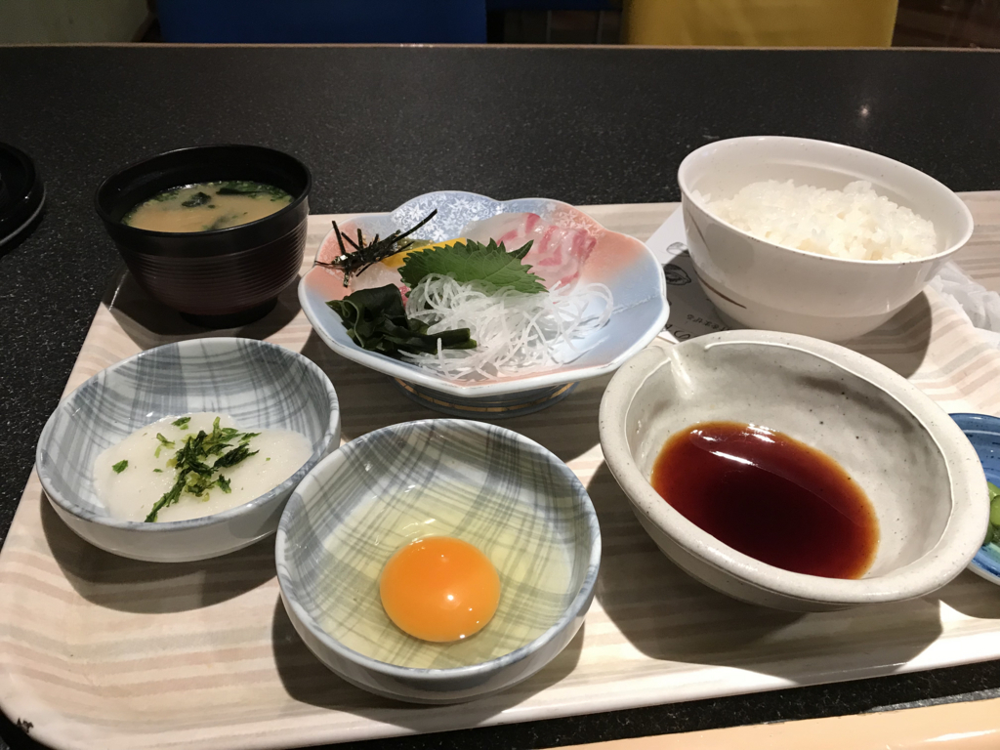

8月8日：松山 → 東予港 → 大阪（南港）
執筆日時：

今回はバス（特急・新居浜行き）で小松へ出て、東予港までの無料バスへ乗り継ぐルート。JR 松山駅から東予港へ向かうルートとしては（到着時間の早い順、発着時刻は今度ダイヤが変わるっぽいので参考まで）、
- 特急バス＋無料連絡バス（松山 18:20 →19:48 小松 20:13 → 20:21 東予港）：予約不要。特急バスは 1,390円
- 伊予鉄＋特急バス＋無料連絡バス（松山 約18:20 → 横河原 19:06 →19:48 小松 20:13 → 20:21 東予港）：横河原 で上の便と合流、小松で乗り換え
- JR＋バス（松山 20:36 → 21:25 壬生川 21:43 → 21:53 東予港）：今治駅発 21:07 のせとうちバス（有料）と壬生川で合流
- 直通連絡バス（松山 20:40 → 22:11 東予港）：要予約、有料。出航ちょい前に到着するのでちょっとあわただしい

今回は、（1）をチョイス。早めに無職の仕事を切り上げて、パパっと荷造りをして、県庁所在地の玄関口にピッタリなデザインで有名な JR 松山駅へでます。夕日がちょっときれいだったかもしれない。

ちなみに、特急・新居浜行きのバスは3番乗り場から。伊予鉄バスとせとうちバスが交互に運行しているのかな？ うちは伊予鉄バスでした。この路線は松山道を使わず、下道を走ります。そのため、アップダウンやカーブが厳しいので注意。乗り物が苦手だと少し酔うかもね。でも、早めにフェリーについてゆっくりしたい場合はこれが一番おすすめの便。

途中、小松総合支所前 というバス停でおります。このバス停はコンビニ併設（むしろ、コンビニの敷地にバス停がある？）で、電源付きの待合室もあります。少し待つけど、苦にはならないはず。
東予港行きは
- 20:13
- 21:11
の2本で、料金は要らないみたい（20:13 の便しか試したことないけど）。整理券を渡すだけで、そのまま降りていいよと言われます。

今日の便は「おれんじ８」。オレンジフェリーは今度、新造船「おれんじ えひめ」を投入する予定で、乗るのはたぶん今回が最後かな。新造船は楽しみだけど、松山にきてから「おれんじ７」「おれんじ８」には結構お世話になったので、ちょっと寂しくもありますね。

そんなわけで、その日の夕食は少し奮発？してみました。まず、「鯛の鳴門焼き」で乾杯。鳴門焼きってのは何なのかよくわかんなかったけど、ビールにピッタリで美味しかったので気にしないことにする。

ついでに「鯛の刺身」をグレードアップして、「宇和島鯛めし定食」にグレードアップ。ダシに卵とタイの切り身を入れて、ご飯にだばーっとかけていただきました。うまうま。生ビール1杯付きで、計2,050円。
夏休みのせいか、船内は子ども連れが多かったけれど、2等寝台で相部屋になった子たちはみんな行儀のいい子でした。こそこそ内緒話をして、ときどきケラケラ笑って両親にたしなめられていたけれど、それも含めてかわいらしい。おっちゃんは独りで iPad mini で本を読んでいましたが、いつのまにか寝落ちしていたようで……目が覚めるともう朝の5時でした。朝風呂に入ると、ちょうど南港に入るところのようで、沖に泊まるタンカーが２、３、朝日に照らされてうずくまっていました。